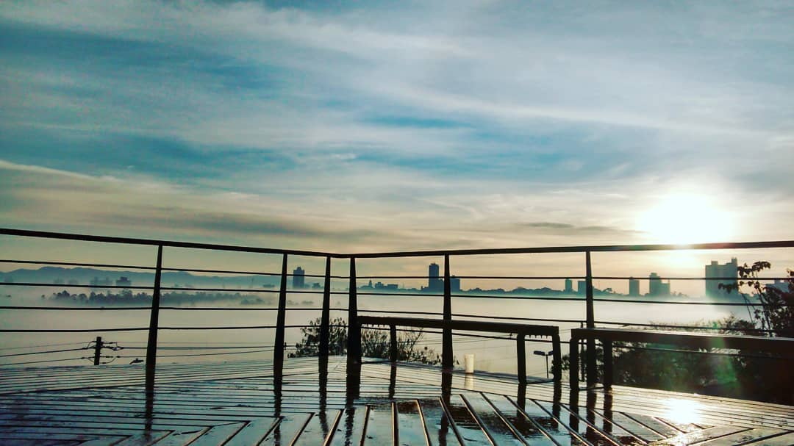

Parque Natural Municipal do Banhado
Natureza no meio da cidade
O Banhado é uma área de várzea do Rio Paraíba do Sul, importante para a preservação ambiental e para a vida de aves e outros animais.
Possui trilhas e é um bom lugar para observar a natureza e aprender sobre educação ambiental.
